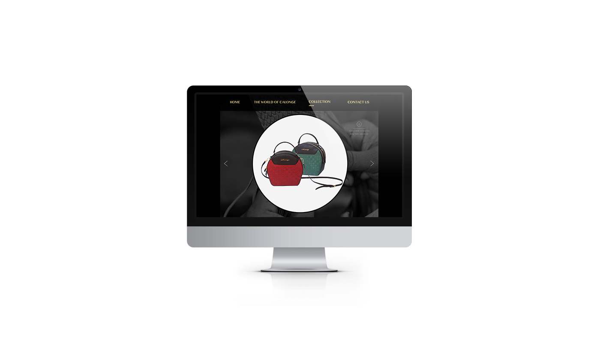
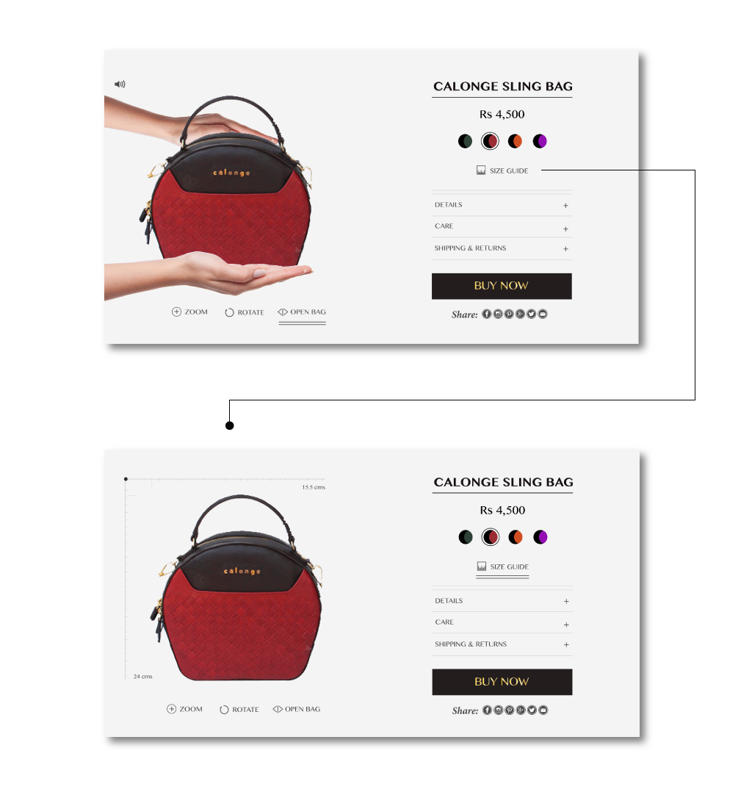

CALONGE
Calonge is a project for the course Digital Art Direction, under the professor Andy Scupelli. The brief was to choose an existing luxury brand and create a digital experience for that brand.
I chose an indian brand, Calonge. This brand owns a very strong heritage which makes it exclusive. My idea is to focus and to emphasise the story behind the production and also about their artisans and their craftsmanship.
DESIGN

When the user clicks the “open bag” button, a video is played, where it shows an hand opening the bag and explaining the features and the characteristics of the handcrafted bag and there is also an audio that complements the video, which can be shut if they are not interested.
